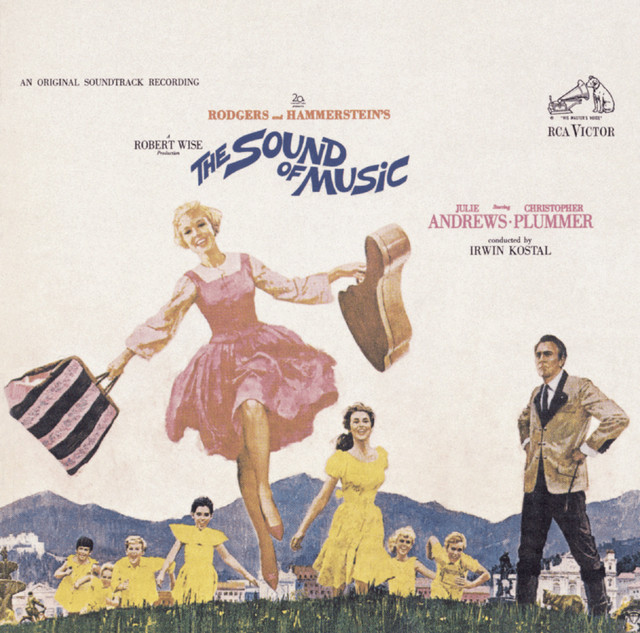

My Favorite Things
by Julie Andres
My Favorite Things Verse 1 Lyrics
Raindrops on roses
And whiskers on kittens
Bright copper kettles and warm woolen mittens
Brown paper packages tied up with strings
These are a few of my favorite things
List of things that are mentioned
- Raindrops on roses
- Whiskers on kittens
- Bright copper kettles
- Warm woolen mittens
- Brown paper packages tied up with strings
3 things that make me feel bad
- When the dog bites
- When the bee stings
- When I'm feeling sad
For full lyrics, click the
link
.
